Food
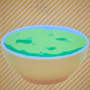
What (is it): a bowl of ectoplasm
Who (was it made for): Danny Fenton
Why (did I make it): Danny was hungry and he's a ghost
Settings: Sour, drink, small, lit up
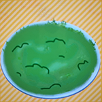
What (is it): a plate of moss
Who (was it made for): Kris Dreamurr (and Susie)
Why (did I make it): Kris was hungry and they eat moss in their game
Settings: Salty, vegetarian dish, small
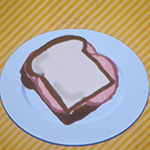
What (is it): a baloney sandwich
Who (was it made for): Sal Fisher
Why (did I make it): Sal was hungry and bologna sandwiches are involved in a major plot point of his game
Settings: Awful, meat dish, medium
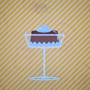
What (is it): a cup of coffee jelly
Who (was it made for): Kusuo Saiki
Why (did I make it): Saiki was hungry and coffee jelly is his favourite food
Settings: Sweet, sweet treat, cold, medium
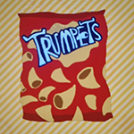
What (is it): a bag of trumpets
Who (was it made for): Suction-Cup Man
Why (did I make it): Cup Man was hungry and they're the only food he's ever shown eating
Settings: Salty, small
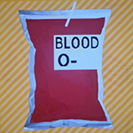
What (is it): a blood bag
Who (was it made for): Spike
Why (did I make it): Spike wanted a drink and he's a vampire
Settings: Sweet, drink, small
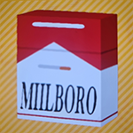
What (is it): a pack of ciggies
Who (was it made for): Spike
Why (did I make it): Spike wanted a drink and he's a vampire
Settings: Spicy, hot, tiny
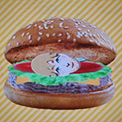
What (is it): Meburger
Who (was it made for): Ryland Grace
Why (did I make it): Grace was hungry and he eats meburgers every day. (A meburger is a burger made from reconstituted meat, aka, his own recreated flesh)
Settings: Meat dish, hot, medium
Items
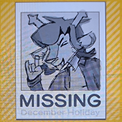
What (is it): Dess missing poster
Who (was it made for): Noelle Holiday
Why (did I make it): Because I'm evil I guess
Settings: Terrifying, unaproachable
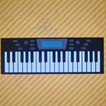
What (is it): piano
Who (was it made for): Kris Dreemurr and June Egbert
Why (did I make it): They both play piano and I wanted them to have pianos but the game doesn't have them as an instrument outside of special events but there was a stamp so this was the best I could do
Settings: Delightful
Music, video games, videos, and books
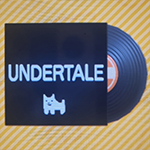
What (is it): UNDERTALE soundtrack (music)
Who (was it made for): Kris Dreemurr
Why (did I make it): I thought it would be funny
Settings: Charming, 8-bit
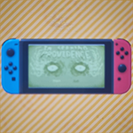
What (is it): In Seeking Providence (video game)
Who (was it made for): Sal Fisher
Why (did I make it): Sal wanted a game to play and In Seeking Providence is a game within the game of Sally face that he/the player plays.
Settings: Challenging, puzzle, lit up
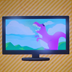
What (is it): Giant Monster Movie (video)
Who (was it made for): Susie
Why (did I make it): Susie loves her giant monster movies
Settings: Terrifying, action, lit up
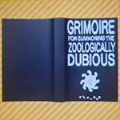
What (is it): Grimoire for summoning (book)
Who (was it made for):
Why (did I make it):
Settings: Educational, "Knowledge lights the dark."
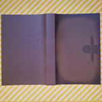
What (is it): John Winchester's journal
Who (was it made for): Sam and Dean Winchester
Why (did I make it): They can't live on my island without their journal man come on
Settings: Educational, "I went to Missouri and learned"
Pets
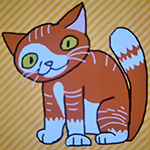
What (is it): Gizmo
Who (was it made for): Sal Fisher
Why (did I make it): Gizmo is Sals cat and he's awesome
Settings: Funny, trotting, "meow"
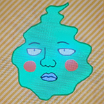
What (is it): Dimple
Who (was it made for): Shigeo Kageyama
Why (did I make it): I didn't feel like making a dimple mii and making him Mobs pet sounded hilarious
Settings: Unusual, floating, "dimple", lit up
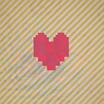
What (is it): SOUL
Who (was it made for): Kris Dreemurr and Frisk
Why (did I make it): The soul is a big part of Undertale and Deltarune, so I thought it would be fun for them to both have one
Settings: Fierce, floating, "proceed", lit up
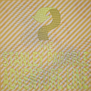
What (is it): The Adventure LineTM
Who (was it made for): Stanley
Why (did I make it): The adventure lineTM can lead us to the story guys I promise
Settings: Charming, gliding, "da bada, dum, dah, dum, dah!"
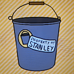
What (is it): reassurance bucket
Who (was it made for):
Why (did I make it):
Settings: Charming, hopping, "bucket"
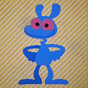
What (is it): EXE
Who (was it made for): Friend Program
Why (did I make it): I didn't feel like making and didn't know how to make an EXE mii, but she's important to FP so pet time it is
Settings:
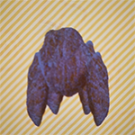
What (is it): Rocky
Who (was it made for): Ryland Grace
Why (did I make it): I had no idea how to make Rocky into a mii but I couldn't have Grace without Rocky so pet time it is
Settings:
Clothes

What (is it):
Who (was it made for):
Why (did I make it):
What (is it):
Who (was it made for):
Why (did I make it):
What (is it):
Who (was it made for):
Why (did I make it):